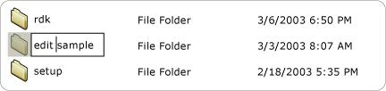

title: Value Control Pattern
description: Describes guidelines and conventions for implementing IValueProvider, including information about properties and methods.
ms.assetid: 6b11d281-aca7-4548-853c-e7322999825d
keywords:
- UI Automation,implementing Value control pattern
- UI Automation,Value control pattern
- UI Automation,IValueProvider
- IValueProvider
- implementing UI Automation Value control patterns
- Value control patterns
- control patterns,IValueProvider
- control patterns,implementing UI Automation Value
- control patterns,Value
- interfaces,IValueProvider
ms.topic: article
ms.date: 05/31/2018
Value Control Pattern
Describes guidelines and conventions for implementing IValueProvider, including information about properties and methods. The Value control pattern is used to support controls that have an intrinsic value not spanning a range and that can be represented as a string.
The value string can be editable, depending on the control and its settings. For examples of controls that implement this control pattern, see Control Types and Their Supported Control Patterns.
This topic contains the following sections.
Implementation Guidelines and Conventions
When implementing the Value control pattern, note the following guidelines and conventions:
-
Controls such as a list item or tree item must support the Value control pattern if the value of any of the items is editable, regardless of the current edit mode of the control. The parent control must also support the Value control pattern if the child items are editable. The following image shows an example of an editable list item.

-
Single and multi-line edit controls must implement ITextProvider to expose their read-only content.
-
Multi-line edit controls must implement IValueProvider if their contents can be changed.
-
IValueProvider does not support the retrieval of formatting information or substring values. Implement ITextProvider in these scenarios.
-
IValueProvider must be implemented by controls such as the color picker selection control from Microsoft Word (see the following image), which supports string mapping between a color value (for example, "yellow") and an equivalent internal RGB value.

-
A control should have its IsEnabled property set to TRUE and its ITextProvider::IsReadOnly property set to FALSE before allowing a call to ITextProvider::SetValue.
Required Members for IValueProvider
The following properties and methods are required for implementing the IValueProvider interface.
Â
This control pattern has no associated events.
Related topics
Control Types and Their Supported Control Patterns
UI Automation Control Patterns Overview
UI Automation Tree Overview
Text and TextRange Control Patterns
Â
Â